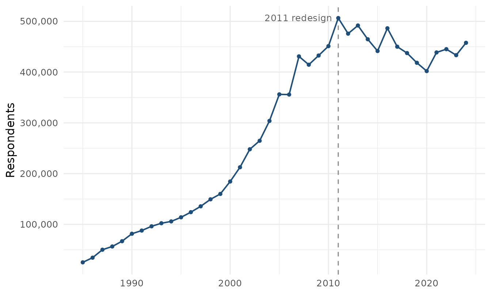

brfssdata publishes one parquet file per BRFSS survey year, 40 files
covering 1985 through 2024. Each file is derived from the SAS Transport
file CDC distributes for that year by the pipeline in data-raw/,
which keeps every row and every column, recodes nothing, renames
nothing, and publishes a SHA-256 checksum next to each year it uploads.
Variable names keep CDC’s spelling, including the leading underscore on
calculated variables such as _LLCPWT and
_AGE_G, and values keep their original numeric codes. The
only column brfssdata adds is year. What does change on the
way in is housekeeping. SAS variable labels move out of the data and
into the searchable catalog behind brfss_vars(); the
Windows-1252 bytes older files carry in their character columns are
re-encoded to UTF-8 so the parquet is valid; blank SAS character fields,
which are SAS’s missing value for character data, are stored as nulls
rather than empty strings; and the six variables CDC stored as a number
in some years and text in others (SEQNO,
_RECORD, MRACEORG, WINDDOWN,
_MSACODE, RCVFVCH4) are written with one
storage type across every year, values unchanged. Without that last step
a multi-year read would silently promote the numeric years to text and
split one code into 1120 and "1120.0"; with
it, and a guard in the package that refuses to combine files whose
stored types conflict, that failure mode is gone.
The files are hosted as GitHub release assets, one release per survey
year, at
https://github.com/muntasirmasum/brfssdata/releases/download/data-YYYY/brfss_YYYY.parquet.
read_brfss() downloads a year once into the local cache and
queries it with DuckDB afterwards, so a request for two variables reads
those two columns, plus year, and leaves the rest of the
file alone. Nothing here replaces CDC’s own distribution. The transport
files, codebooks, and questionnaires on cdc.gov remain the authoritative
source, and this collection is a convenience layer over them.
The catalog
The table below lists every published year with its respondent count,
its column count, the size of the hosted parquet file, and the final
weight brfss_design() selects for that year. That weight is
_FINALWT through 2010 and _LLCPWT from 2011
on, which is the mechanical consequence of the 2011 redesign discussed
below.
stats <- read.csv("brfss_year_stats.csv")
catalog <- data.frame(
Year = stats$year,
Respondents = format(stats$respondents, big.mark = ",", trim = TRUE),
Columns = stats$variables,
`Size (MB)` = stats$size_mb,
Weight = ifelse(stats$year < 2011, "_FINALWT", "_LLCPWT"),
check.names = FALSE
)
knitr::kable(catalog, align = "rrrrl")| Year | Respondents | Columns | Size (MB) | Weight |
|---|---|---|---|---|
| 1985 | 25,221 | 101 | 0.8 | _FINALWT |
| 1986 | 34,395 | 109 | 1.2 | _FINALWT |
| 1987 | 50,081 | 117 | 1.9 | _FINALWT |
| 1988 | 56,448 | 153 | 2.3 | _FINALWT |
| 1989 | 66,867 | 163 | 2.8 | _FINALWT |
| 1990 | 81,557 | 194 | 3.7 | _FINALWT |
| 1991 | 87,846 | 181 | 3.8 | _FINALWT |
| 1992 | 96,213 | 182 | 4.1 | _FINALWT |
| 1993 | 102,263 | 198 | 4.1 | _FINALWT |
| 1994 | 105,853 | 210 | 4.9 | _FINALWT |
| 1995 | 113,934 | 213 | 4.8 | _FINALWT |
| 1996 | 124,085 | 264 | 6.2 | _FINALWT |
| 1997 | 135,582 | 269 | 6.2 | _FINALWT |
| 1998 | 149,342 | 327 | 8.2 | _FINALWT |
| 1999 | 159,989 | 282 | 8.1 | _FINALWT |
| 2000 | 184,450 | 290 | 10.5 | _FINALWT |
| 2001 | 212,510 | 292 | 11.7 | _FINALWT |
| 2002 | 247,964 | 311 | 15.7 | _FINALWT |
| 2003 | 264,684 | 295 | 17.9 | _FINALWT |
| 2004 | 303,822 | 294 | 16.6 | _FINALWT |
| 2005 | 356,112 | 326 | 24.2 | _FINALWT |
| 2006 | 355,710 | 303 | 23.4 | _FINALWT |
| 2007 | 430,912 | 363 | 36.9 | _FINALWT |
| 2008 | 414,509 | 292 | 27.6 | _FINALWT |
| 2009 | 432,607 | 406 | 36.6 | _FINALWT |
| 2010 | 451,075 | 398 | 32.4 | _FINALWT |
| 2011 | 506,467 | 455 | 44.4 | _LLCPWT |
| 2012 | 475,687 | 360 | 31.8 | _LLCPWT |
| 2013 | 491,773 | 337 | 41.3 | _LLCPWT |
| 2014 | 464,664 | 280 | 25.8 | _LLCPWT |
| 2015 | 441,456 | 331 | 33.3 | _LLCPWT |
| 2016 | 486,303 | 276 | 24.8 | _LLCPWT |
| 2017 | 450,016 | 359 | 35.3 | _LLCPWT |
| 2018 | 437,436 | 276 | 22.5 | _LLCPWT |
| 2019 | 418,268 | 343 | 32.6 | _LLCPWT |
| 2020 | 401,958 | 280 | 21.4 | _LLCPWT |
| 2021 | 438,693 | 304 | 26.0 | _LLCPWT |
| 2022 | 445,132 | 329 | 26.3 | _LLCPWT |
| 2023 | 433,323 | 351 | 29.1 | _LLCPWT |
| 2024 | 457,670 | 302 | 25.6 | _LLCPWT |
The whole collection holds about 11.4 million respondents in roughly
737 MB of parquet, which is small enough that a working cache of every
year fits comfortably on a laptop. The column count is CDC’s variables
for that year plus the added year, so it tracks the size of
the core questionnaire together with whatever optional modules and
calculated variables went into the public-use file. CDC’s 1985 page
reports 100 variables, for instance, and the hosted 1985 file has 101
columns.
Respondents over time
library(ggplot2)
ggplot(stats, aes(year, respondents)) +
geom_vline(xintercept = 2011, linetype = "dashed", color = "grey55") +
annotate(
"text",
x = 2010.4,
y = max(stats$respondents),
label = "2011 redesign",
hjust = 1,
size = 3.4,
color = "grey35"
) +
geom_line(color = "#1f4e79", linewidth = 0.7) +
geom_point(color = "#1f4e79", size = 1.3) +
scale_y_continuous(
labels = function(x) format(x, big.mark = ",", scientific = FALSE)
) +
labs(x = NULL, y = "Respondents") +
theme_minimal(base_size = 12)
The shape of that curve is mostly the history of which states were in the survey and how many interviews they funded. Sample size climbs as states join and expand their samples, peaks in 2011, the year cell-phone respondents entered the combined public-use file, and has since varied between roughly 400,000 and 490,000 completed interviews a year, consistent with the “more than 400,000 adult interviews each year” CDC describes as the system’s current volume.
Milestones
CDC initiated BRFSS in 1984 with 15 states collecting risk-behavior data through monthly telephone interviews. Participation grew from there, and the survey now collects data in all 50 states, the District of Columbia, and participating US territories, completing more than 400,000 adult interviews a year. A public-use file for 1984 exists too, 12,258 records from those first 15 states, but its documentation now sits in CDC’s web archive instead of the current annual-data index, and it is not part of these releases, which begin at 1985.
The 2011 survey year is the one methodological boundary that matters
for almost every analysis. CDC added a cell-phone sampling frame and
replaced post-stratification with iterative proportional fitting, or
raking, which allowed cell-phone data to be incorporated and brought
additional demographic characteristics such as education, marital
status, and home ownership into the weighting. The annual data pages
since then carry the same caution, that the year’s data are not directly
comparable to BRFSS years before 2011 because of the change in weighting
methodology and the addition of the cell phone sampling frame.
brfss_design() treats that statement as a hard boundary and
refuses to pool across it without allow_break = TRUE.
Another consequence of 2011 is visible in the catalog above. The file
grows to 455 columns that year, the widest in the series, and the
respondent count reaches its maximum.
Coverage is not fixed after 2011 either, and the reporting areas in a public-use file change from year to year. For 2020 the data cover 50 states, the District of Columbia, Guam, and Puerto Rico. A year later the US Virgin Islands are included and the state count is 49. By 2023 it is 48, because Kentucky and Pennsylvania did not collect enough data that year to meet CDC’s minimum requirements for the public file, with the District of Columbia and the same three territories still in. State-level or region-level work should check the reporting areas for each year instead of assuming a constant panel of states.
Per-year CDC documentation
Each survey year has its own documentation page on cdc.gov, all of
them reachable from the annual
survey data index. Recent years follow the pattern
https://www.cdc.gov/brfss/annual_data/annual_YYYY.html, for
example annual_2023.html.
Years through 2011 use an .htm extension instead, and the
pages for 1984 through 1988 have moved to CDC’s web archive.
Those pages are where to answer the questions this package deliberately leaves alone. A recent year carries the annual overview (background, design, data collection and processing, and statistical and analytical issues), the codebook with frequencies for every variable, the calculated-variable documentation, the weighting formula, the summary data quality report with response rates, the comparability notes, a listing of which optional modules each state used, and the questionnaire itself. Early years are much thinner. The 1985 page offers the data files and a SAS conversion program and little else.
Every page also states the record count for the year, and that is the number reproduced in the catalog table above. CDC reports 433,323 records for 2023 and 401,958 for 2020, and the hosted files hold exactly that many rows.
When a result looks surprising, the codebook for that year is usually the fastest explanation, because a question’s wording, its answer categories, or the set of states that asked it may have changed.
Variables across years
The hosted files are the survey as CDC released it, which means
variable sets drift. The catalog that ships alongside the data holds
2,128 distinct variable names across the 40 years.
brfss_vars() searches it by name and label and reports the
years each variable appears in. A search for smok pulls in
most of the smoking battery at once, so the six names below are picked
out of a much longer result.
library(brfssdata)
smoking <- brfss_vars("smok")
nrow(smoking)
#> [1] 96
smoking[smoking$variable %in% c(
"SMOKE100", "SMOKENOW", "SMOKEDAY", "SMOKDAY2", "STOPSMOK", "STOPSMK2"
), ]
#> # A tibble: 6 × 3
#> variable label years
#> <chr> <chr> <chr>
#> 1 SMOKDAY2 FREQUENCY OF DAYS NOW SMOKING 2005-2024
#> 2 SMOKE100 SMOKED AT LEAST 100 CIGARETTES 1985-2024
#> 3 SMOKEDAY FREQUENCY OF DAYS NOW SMOKING 1996-2004
#> 4 SMOKENOW CURRENTLY SMOKE 1985-1995
#> 5 STOPSMK2 STOPPED SMOKING IN PAST 12 MONTHS 2001-2024
#> 6 STOPSMOK QUIT SMOKING A DAY OR MORE IN PAST YEAR 1990-2000The pattern in those rows is typical. One anchor question survives
the whole series, SMOKE100 running from 1985 to 2024, while
the question next to it is renamed as its wording is revised, so current
smoking frequency is SMOKENOW through 1995,
SMOKEDAY from 1996 to 2004, and SMOKDAY2 from
2005 on. Quit attempts follow the same path from STOPSMOK
to STOPSMK2. An analysis that spans those breaks has to
harmonize the variants deliberately, and the year ranges are what tell
you where the seams are.
Because variable sets differ, combining years fills a variable that a
year does not carry with NA instead of failing. That is
convenient but easy to misread, so confirm with
brfss_vars() that a variable actually exists in every year
requested before treating a column of missing values as a real
zero-prevalence result.
brfss_vars("SMOKDAY2", years = c(2003, 2005))
#> # A tibble: 1 × 3
#> variable label years
#> <chr> <chr> <chr>
#> 1 SMOKDAY2 FREQUENCY OF DAYS NOW SMOKING 2005The reply names 2005 only, so in a read spanning both years the 2003
rows would come back all NA for that column.
Known limitations
The collection has a few known gaps.
Upstream revisions are not detected. Each annual entry in the
manifest records the CDC URL its year was built from, the sha256 and
size of that Transport zip as downloaded, the download and processing
dates, and the published file’s row and column counts, and
brfss_year_info() carries the source file name, format,
checksum, and download date. But nothing watches CDC’s side: if CDC
replaces a year’s file, the provenance identifies the copy this
collection was built from, not whether a newer one exists upstream.
Calculated variables keep CDC’s stored scaling. _BMI5
and _DRNKWK2 carry two implied decimal places, so a stored
2704 is a BMI of 27.04, and nothing in the files or catalogs records
that factor, nor units or valid ranges. The per-year CDC codebook,
linked from brfss_year_info()$codebook_url, is the source
for all three.
Value labels stop at 1998, because CDC distributes no usable format
libraries for earlier years. na = TRUE therefore has no
catalog to consult before 1998 and warns rather than guessing; special
codes in those years must be recoded by hand from CDC’s codebooks.
Module analyses that require CDC’s questionnaire-version datasets and
their _LCPWTV1 to _LCPWTV3 weights are not
supported, because the hosted annual files do not include those weights.
For the module weights the files do carry, the confinement check in
brfss_design() warns when a module variable is analyzed
under a full-sample weight.
Releases are not immutable. A corrected year replaces the published bytes under the same tag; the manifest checksum and the daily cache recheck notice the change, but there is no way yet to pin an analysis to an exact prior snapshot.
Citing the data
All data originate from the CDC BRFSS annual survey files, which are in the public domain. Suggested citation for the data:
Centers for Disease Control and Prevention (CDC). Behavioral Risk Factor Surveillance System Survey Data. Atlanta, Georgia: U.S. Department of Health and Human Services, Centers for Disease Control and Prevention, [appropriate year].
The hosted parquet files are built directly from CDC’s published SAS
Transport files. That pipeline lives in data-raw/,
and each published year ships with a .sha256 file, so a
downloaded parquet can be checked against the release it came from.